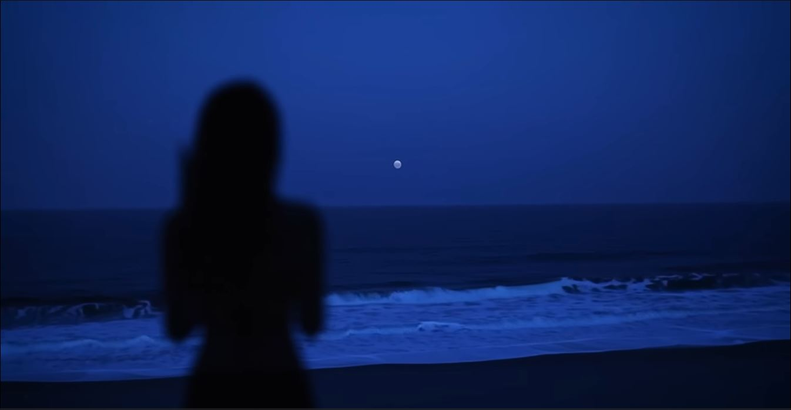

مرحباً بكم في الأفق الليلي
مرحباً بكم في الأفق الليلي الحي، من ركائز الليل هي عمق مشاعرنا. ونقدم لكم تجربة الأفق الليلي المذهل والمستوحى من الهدوء والسكون في الأفق الليلي.
هدوء السكون الليلي
ماذا يخبئ لنا الليل في الأفق البعيد؟ خطوط عميقة تحاكي مشاعر الطمأنينة والعزلة صممت خصيصاً للمتصفح المحب للهدوء الممزوج بجمال الأفق الليلي الساحر.
أضواء في الليل
المغزى من تفاعل الأجرام والمجرات في الكون الشاسع.
المنيفة
الآفاق التي نراها في الاتجاهات والمسارات الحيوية.
نسمة التجربة
أطروحة تحاكي الاستمرارية والتقنية في الفضاء الرقمي.
من نحن - الأفق الليلي
هنا تكتب الكلام الذي تريده تماماً عن موقعك! تم تصميم هذه المساحة لتظهر بتأثير زجاجي أنيق متناسق مع التصميم الأصلي وبحركة انسيابية عند الضغط على خيار "من نحن".
رؤية المستقبل
ماذا يخبئ لنا الليل في الأفق البعيد؟ خطوط عميقة تحاكي مشاعر الطمأنينة والعزلة صممت خصيصاً للمتصفح المحب للهدوء الممزوج بجمال الأفق الليلي الساحر.
بيئتنا الهادئة
نهتم بخلق فضاء رقمي مريح ومستدام بصرياً، يقلل من إجهاد العين ويوفر واجهة تفاعلية تحاكي سكون الطبيعة والليل لراحة المتصفح المستمر.